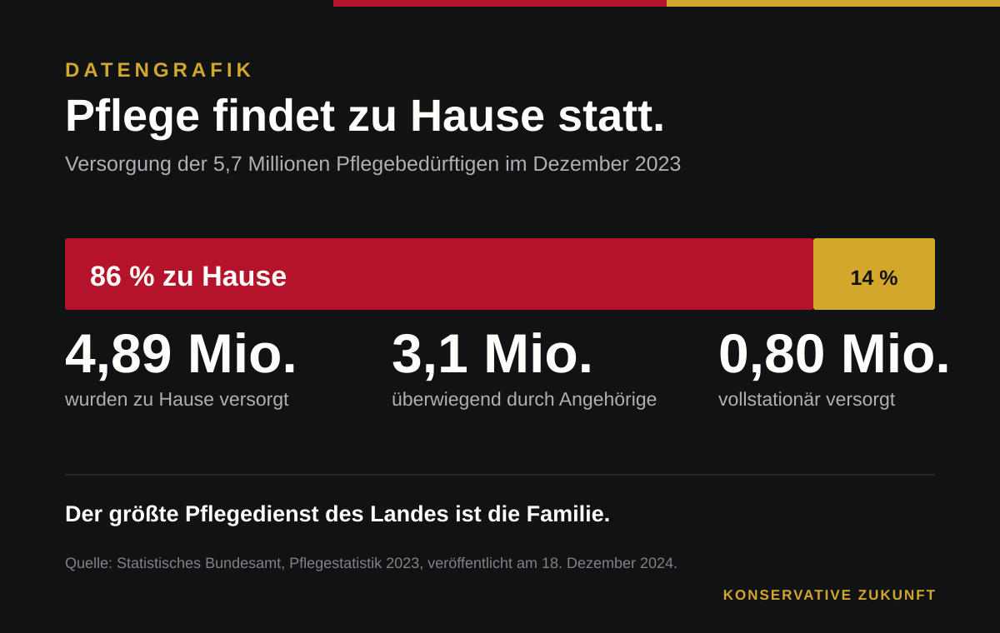
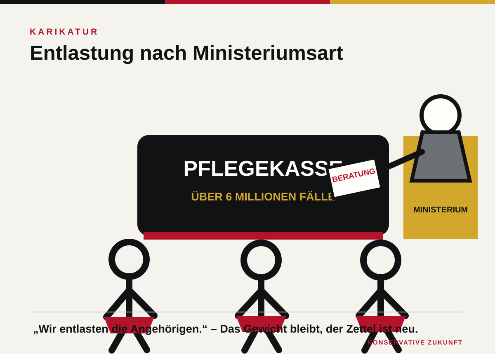

Das Bundesgesundheitsministerium verspricht, pflegende Angehörige zu entlasten. Im selben Fragenkatalog zum Pflegeneuordnungsgesetz steht, dass der Entlastungsbetrag von 131 Euro im Pflegegrad 1 entfällt, neu Eingestufte der Pflegegrade 2 und 3 drei Monate lang nur das halbe Entlastungsbudget erhalten und die Rentenbeiträge für pflegende Angehörige auf 70 Prozent der bisherigen Beträge begrenzt werden sollen. Selten lässt sich der Widerspruch deutscher Familienpolitik so sauber in einem Dokument nachlesen.
Die Pflegeversicherung braucht eine Reform. Darüber muss man nicht streiten. Nach der Pflegestatistik 2023 lebten 5,7 Millionen Pflegebedürftige in Deutschland. Das Ministerium spricht inzwischen von mehr als sechs Millionen. Zugleich kamen 1998 noch 29 Beitragszahlende auf einen Leistungsempfänger, 2025 waren es nach Angaben des Ministeriums nur noch zehn. Wer diese Entwicklung mit einem neuen Schlagwort und einem weiteren Darlehen überdecken will, verweigert die Wirklichkeit.
Doch eine Versicherung ist nicht allein deshalb saniert, weil sie Leistungen kürzt und Lasten verlagert. Pflege ist Familienpolitik. 4,9 Millionen Pflegebedürftige, also 86 Prozent, wurden 2023 zu Hause versorgt. 3,1 Millionen erhielten ausschließlich Pflegegeld und wurden überwiegend von Angehörigen gepflegt. Der größte Pflegedienst des Landes hat keine Personalabteilung, keine Tarifkommission und keine Pressestelle. Er besteht aus Ehepartnern, Kindern und Enkeln.
Diese Arbeit ist nicht kostenlos, nur weil sie keine Rechnung erzeugt. Wer einen Angehörigen pflegt, fährt zu Ärzten, füllt Anträge aus, organisiert Medikamente und übernimmt körperlich schwere Aufgaben. Häufig sinkt zugleich das Erwerbseinkommen. Das Risiko wird doppelt privat: zunächst durch die tägliche Pflege, später durch geringere Rentenansprüche. Jede Reform, die diese Folgekosten ausblendet, rechnet nicht sparsamer. Sie verschiebt die Rechnung aus dem Bundeshaushalt in die Biografien der Familien.

Die Reform hat eine vernünftige Seite
Der Entwurf enthält sinnvolle Bausteine. Leistungen sollen in Budgets gebündelt werden. Eine feste Pflegebegleitung soll Familien durch Anträge und Versorgungsfragen führen. Für akute Notlagen ist ein Überbrückungsbudget vorgesehen. Ein digitales Pflege-Cockpit soll Informationen zusammenführen. Ab 2028 sollen Leistungsbeträge jährlich an die Inflation angepasst werden. Das ist mehr als Kosmetik. Weniger Bürokratie und eine verlässliche Ansprechperson können im Pflegealltag tatsächlich helfen.
Auch höhere Schwellen bei der erstmaligen Einstufung sind nicht automatisch unvertretbar. Ein Sozialstaat muss Fehlanreize prüfen und seine Leistungen auf tatsächliche Bedürftigkeit konzentrieren. Bereits anerkannte Pflegegrade sollen geschützt bleiben. Konservative Politik darf finanzielle Grenzen nicht leugnen. Sie muss aber entscheiden, wo gespart wird – und welche Institutionen sie schützen will.
Zur Wahrheit gehört auch die Einnahmeseite. Der Zuschlag für Kinderlose soll um 0,1 Prozentpunkte auf 0,7 Prozent steigen. Die Beitragsbemessungsgrenze soll angehoben werden, Arbeitgeber sollen auf Minijob-Löhne Pflegebeiträge zahlen. Das Ministerium will den allgemeinen Beitragssatz damit stabil halten. Man kann diese Gewichtung vertreten. Sie zeigt jedoch, dass der Entwurf keineswegs allein kürzt. Umso weniger gibt es einen Grund, gerade die familiäre Pflege als bequemsten Sparposten zu behandeln.

Beratung bezahlt keine Hilfe
Im Pflegegrad 1 soll der monatliche Entlastungsbetrag von 131 Euro entfallen. Dafür verspricht das Ministerium intensivere Begleitung und Präventionsangebote. Beratung kann Orientierung geben. Sie putzt aber keine Wohnung, kauft keine Lebensmittel ein und verschafft einer erschöpften Tochter keinen freien Nachmittag. Wer eine Geldleistung durch Hinweise ersetzt, darf das nicht Entlastung nennen.
Noch deutlicher wird die Schieflage bei neu eingestuften Pflegebedürftigen der Grade 2 und 3. In den ersten drei Monaten soll nur die Hälfte des neuen Entlastungsbudgets fließen. Ausgerechnet dann müssen Familien Arbeitszeiten ändern, Hilfsmittel beschaffen und Dienste organisieren. Das Ministerium begründet die Kürzung offen auch mit der finanziellen Stabilisierung der Versicherung. Der ehrliche Satz lautet also: In der schwierigsten Anfangsphase wird gespart, weil dort kurzfristig Geld zu holen ist.
Auch die Alterssicherung trifft den Kern familiärer Verantwortung. Wer für die Pflege seine Erwerbsarbeit einschränkt, verliert Einkommen und berufliche Chancen. Die Pflegeversicherung gleicht einen Teil davon durch Rentenbeiträge aus. Künftig sollen nur noch 70 Prozent der bisherigen Beträge gezahlt werden. Bestehende Ansprüche bleiben, künftige fallen niedriger aus. Der Staat belohnt die Übernahme von Verantwortung mit einer kleineren Rente.
Wahlfreiheit statt Modellzwang
Ab 2028 soll außerdem die beitragsfreie Mitversicherung von Ehe- und Lebenspartnern eingeschränkt werden. Vorgesehen ist ein Zuschlag von 0,52 Prozent der beitragspflichtigen Einnahmen des Mitglieds. Eltern mit Kindern unter sieben Jahren, pflegende Partner und einige weitere Gruppen bleiben ausgenommen. Familien mit älteren Kindern können dennoch zusätzlich belastet werden. Erziehungsarbeit endet aber nicht am siebten Geburtstag.
Ein konservativer Sozialstaat schreibt Familien nicht vor, wie sie Erwerbs- und Sorgearbeit aufteilen. Er schützt ihre Wahlfreiheit. Wer das Doppelverdienermodell zur stillen Norm erklärt, behandelt jede andere Arbeitsteilung als Abweichung. Das ist nicht modern. Es ist bloß eine neue Form staatlicher Bevormundung.
Die bessere Reform behält Pflegebegleitung, Notfallbudget, Digitalisierung und jährliche Anpassungen. Sie kürzt nicht pauschal die Rentenansprüche pflegender Angehöriger. Sie sichert die ersten Pflegemonate vollständig ab. Sie finanziert versicherungsfremde Leistungen transparent aus Steuern und spart zuerst bei Verwaltung und Fehlsteuerung, nicht bei der Familie.
Vor allem müsste die Bundesregierung offen benennen, welchen Anteil familiäre Pflege dauerhaft tragen soll. Wer Leistungen zu Hause voraussetzt, muss auch Auszeiten, Ersatzpflege und Alterssicherung verlässlich finanzieren. Wahlfreiheit existiert nur, wenn eine Familie sich sowohl für eigene Pflege als auch für professionelle Hilfe entscheiden kann, ohne durch Überforderung oder Geldmangel in ein Modell gedrängt zu werden.
Schwarz-Rot will eine Reform vorlegen, die gleichzeitig modernisiert, stabilisiert und entlastet. Das klingt nach dem üblichen politischen Dreisatz, bei dem am Ende jemand die Rechnung bezahlt. Diesmal sind es vielfach jene, die längst zahlen: mit Beiträgen, mit Arbeitszeit und mit den Nächten, in denen kein Ministerium die Pflege übernimmt. Familie ist kein Lückenbüßer. Eine Regierung, die das vergisst, saniert nicht den Sozialstaat. Sie verbraucht sein Fundament.
Quellen
- Bundesgesundheitsministerium: Fragen und Antworten zum Referentenentwurf des Pflegeneuordnungsgesetzes, Stand 5. Juni 2026.
- Bundesgesundheitsministerium: Referentenentwurf des PNOG, 4. Juni 2026.
- Statistisches Bundesamt: 5,7 Millionen Pflegebedürftige zum Jahresende 2023, 18. Dezember 2024.
Redaktionsstand: 12. Juli 2026. Gegenstand ist ein Referentenentwurf, kein geltendes Gesetz.